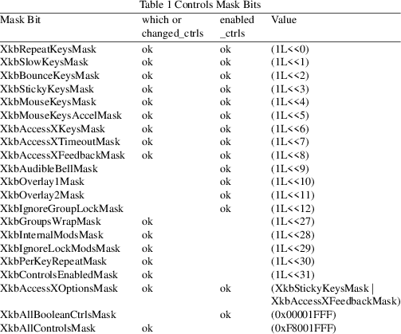

XkbGetControlsChanges − Updates a local copy of a keyboard description with the changes previously noted by one or more calls to XkbNoteControlsChanges
|
XkbGetControlsChanges (Display *dpy, XkbDescPtr xkb, XkbNameChangesPtr changes); |
|
dpy |
connection to X server |
|||
|
xkb |
xkb->ctrls will be updated |
changes
indicates which parts of xkb->ctrls to update
Whenever a field in the controls structure changes in the server’s keyboard description, the server sends an XkbControlsNotify event to all interested clients.To receive XkbControlsNotify events under all possible conditions, use XkbSelectEvents and pass XkbControlsNotifyMask in both bits_to_change and values_for_bits.
To receive XkbControlsNotify events only under certain conditions, use XkbSelectEventDetails using XkbControlsNotify as the event_type and specifying the desired state changes in bits_to_change and values_for_bits using mask bits from Table 1.
Table 1 shows the actual values for the individual mask bits used to select controls for modification and to enable and disable the control. Note that the same mask bit is used to specify general modifications to the parameters used to configure the control (which), and to enable and disable the control (enabled_ctrls). The anomalies in the table (no "ok" in column) are for controls that have no configurable attributes; and for controls that are not boolean controls and therefore cannot be enabled or disabled.

The changed_ctrls field specifies the controls components that have changed and consists of bits taken from the masks defined in Table 10.7 with "ok" in the changed_ctrls column.
The controls currently enabled in the server are reported in the enabled_ctrls field. If any controls were just enabled or disabled (that is, the contents of the enabled_ctrls field changed), they are flagged in the enabled_ctrl_changes field. The valid bits for these fields are the masks listed in Table 10.7 with "ok" in the enabled_ctrls column. The num_groups field reports the number of groups bound to the key belonging to the most number of groups and is automatically updated when the keyboard mapping changes.
If the change was caused by a request from a client, the keycode and event_type fields are set to zero and the req_major and req_minor fields identify the request. The req_major value is the same as the major extension opcode. Otherwise, event_type is set to the type of event that caused the change (one of KeyPress, KeyRelease, DeviceKeyPress, DeviceKeyRelease, ButtonPress or ButtonRelease), and req_major and req_minor are undefined. If event_type is KeyPress, KeyRelease, DeviceKeyPress, or DeviceKeyRelease, the keycode field is set to the key that caused the change. If event_type is ButtonPress or ButtonRelease, keycode contains the button number.
When a client receives an XkbControlsNotify event, it can note the changes in a changes structure using XkbNoteControlsChanges.
XkbGetControlsChanges examines the changes parameter, queries the server for the necessary information, and copies the results into the xkb->ctrls keyboard description. If the ctrls field of xkb is NULL, XkbGetControlsChanges allocates and initializes it. To free the ctrls field, use XkbFreeControls.
XkbGetControlsChanges returns Success if successful and can generate BadAlloc, BadImplementation, and BadMatch errors.
|
Success |
The XkbGetControlsChanges function returns Success if the query of the server was successful. |
The structure for the XkbControlsNotify event is defined as follows:
typedef struct
{
int type; /* Xkb extension base event code */
unsigned long serial; /* X server serial number for event */
Bool send_event; /* True => synthetically generated */
Display * display; /* server connection where event
generated */
Time time; /* server time when event generated */
int xkb_type; /* XkbCompatMapNotify */
int device; /* Xkb device ID, will not be XkbUseCoreKbd */
unsigned int changed_ctrls; /* bits indicating which
controls data have changed*/
unsigned int enabled_ctrls; /* controls currently enabled in
server */
unsigned int enabled_ctrl_changes; /* bits indicating
enabled/disabled controls */
int num_groups; /* current number of keyboard groups */
KeyCode keycode; /* != 0 => keycode of key causing change
*/
char event_type; /* Type of event causing change */
char req_major; /* major event code of event causing change
*/
char req_minor; /* minor event code of event causing change
*/
} XkbControlsNotifyEvent;
|
BadAlloc |
Unable to allocate storage |
BadImplementation
Invalid reply from server
|
BadMatch |
A compatible version of Xkb was not available in the server or an argument has correct type and range, but is otherwise invalid |
XkbFreeControls(3), XkbNoteControlsChanges(3), XkbSelectEventDetails(3), XkbSelectEvents(3)